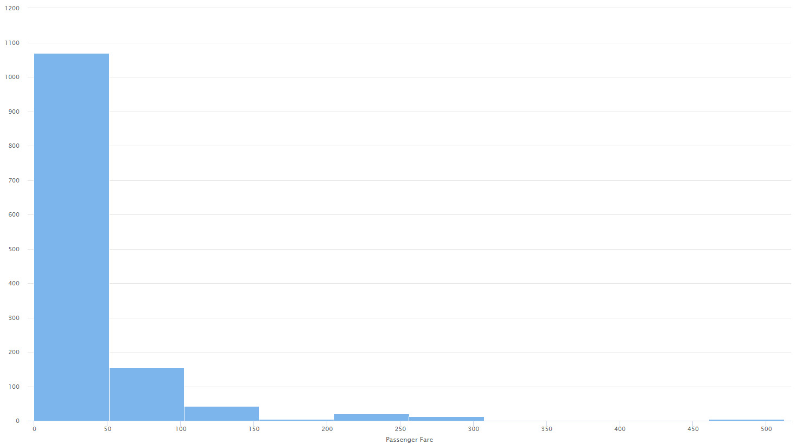
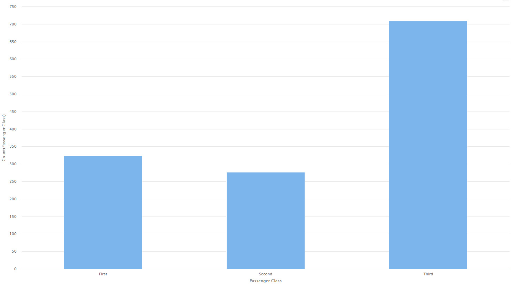
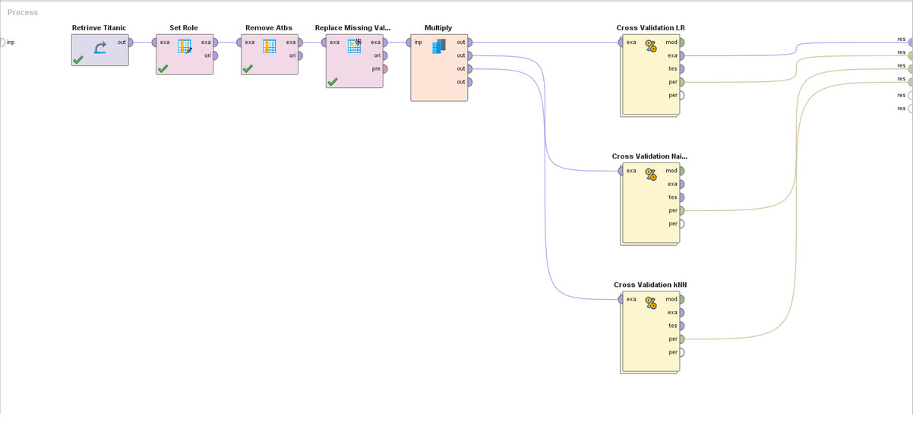

Dataset analysis of the Titanic event.
This dataset contains detailed information about the passengers of the famous ship, including data such as name, gender, age, ticket class, port of embarkation, and whether or not they survived the shipwreck. The Titanic disaster is a classic case study in data analytics and machine learning, allowing data professionals to apply various techniques to extract valuable information and gain a deeper understanding of what happened on that tragic April night 1912.
The objective of this dataset is to predict whether or not a person would survive the Titanic event, based on the attributes it has, such as the person's age, location on the cruise, the cost of their ticket, among others.
In this study case, I used the Titanic dataset that is included in Rapid Miner. For using it, go to Samples in the Repository section, then data and there you can find the Titanic dataset.
This dataset has 11 predictor variables, plus 1 target variable, which is the one you want to predict. Of these 11 variables, 4 are numerical and the rest are categorical (including the target variable).
The variables contained in the dataset are the following:
There are 2 problematic attributes with missing values, "Life Boat" and "Cabin", both of which will be removed from the dataset. In the case of Cabin, it is due to having 1000 missing values (when the dataset has 1309 entries) and, in my opinion, completing so many missing values would not be correct, since it could affect the reality of the matter.
On the other hand, Life Boat, although it has 823 missing values, will be removed due to its high correlation with the target variable. Since the fact that a passenger has or not an associated lifeboat indicates whether he or she survived or not.
As previously mentioned, the variables "Life Boat" and "Cabin" will be removed from the analysis. But also, the variables "Name" and "Ticket Number" do not contribute much to the analysis of the problem since they are simply identifiers related to the passenger.
In this case, outlier treatment is not performed, since it was not considered necessary. The only variable that contains outliers is "Passanger Fare", but, as there is the possibility that some people buy first class tickets (which at that time were worth between 500 and 1000 usd, precisely the range where the outliers are found), it is decided to leave them without treatment. Furthermore, by removing them, the performance results were not affected.
Furthermore, in the case of using the kNN algorithm, normalization will be applied.
Viewing the graphs of the different attributes, it can be seen that the vast majority of passengers (1070) paid for a ticket worth between 0 and 51 dollars, thus visualizing biases towards the left of the graph.
And something similar happens with the number of people in each class, the majority of passengers (703) traveled in third class, so it makes sense that the majority of tickets purchased were for a price of up to $51.
Since we are dealing with a classification problem in which the target variable is binomial (survives or not), we will surely use logistic regression. In addition, we will compare its performance with Naive-Bayes and K-NN models which are also applicable to the problem.
The first task to perform within Rapid Miner will be to import the dataset and mark our target variable using the Set Role operator. After that, the Select Attributes operator is applied to remove the attributes that were previously decided to discard. Following that, the Replace Missing Values operator is applied to replace the few missing values with the average of each attribute.
Once the dataset has been correctly prepared, the different classification algorithms will begin to be applied to evaluate which one gives the best results. For this, the Multiply operator is used to multiply the dataset by 3 and thus be able to apply Logistic Regression, Naive Bayes and KNN. To apply each of them, the Cross Validation operator is used to divide our dataset into a training part and a testing part.
The Rapid Miner process should look something like this:
Within each Cross Validation there is the algorithm to use and the Performance operator, to evaluate the performance of each of them. Below you can see the configuration of each Cross Validation and the result of each algorithm.
As can be seen, the logistic regression algorithm was the one that obtained the best performance. However, the 3 algorithms obtained a result that was too similar (78%, 77%, 76%), and quite high for predicting whether or not a passenger survives the Titanic event. Although it would be nice to improve the percentage to an even higher one since it is about predicting whether or not someone will survive the Titanic event, 78% almost 80% is quite good result.